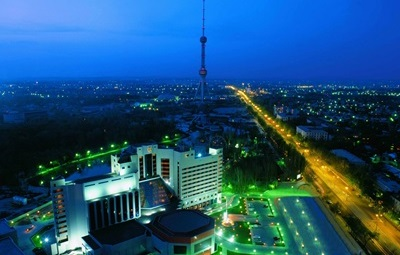
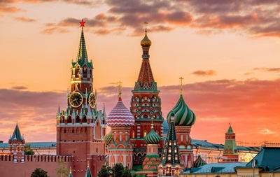

Ташкент – столица Узбекистана и крупнейший город Центральной Азии. Ташкент расположен в северо-восточной части страны. Он расположен к западу от Чоткальских гор в долине реки Чирчик на высоте 1475–1575 футов (450–480 м), пересеченной рядом протоков реки Чирчик. Город, вероятно, датируется II-I веками до нашей эры и был известен под разными названиями: Джадж, Чочкант, Шашкент и Бинкент. Название Ташкент, что в переводе с узбекского означает «Каменная деревня», впервые упоминается в 11 веке.

 Лондон – столица Великобритании. Также известен как Большой Лондон. Ниже по течению реки Темзы, в 64 км от Северного моря, он расположен в центральной части равнины, называемой Лондонским бассейном. Это один из старейших великих городов мира. Его история насчитывает почти два тысячелетия и является одной из самых космополитичных. Крупнейший мегаполис Великобритании, он также является экономическим, транспортным и культурным центром страны. Он образует Большой Лондон, который административно выделен в отдельное столичное графство с окружающими его городами и Сити.
Лондон – столица Великобритании. Также известен как Большой Лондон. Ниже по течению реки Темзы, в 64 км от Северного моря, он расположен в центральной части равнины, называемой Лондонским бассейном. Это один из старейших великих городов мира. Его история насчитывает почти два тысячелетия и является одной из самых космополитичных. Крупнейший мегаполис Великобритании, он также является экономическим, транспортным и культурным центром страны. Он образует Большой Лондон, который административно выделен в отдельное столичное графство с окружающими его городами и Сити.
Город Москва – столица России, расположенная на крайнем западе страны. С момента первого упоминания в летописи 1147 года Москва сыграла важную роль в истории Руси. В конце 13 века Москва стала столицей Великого княжества Московского; поэтому москвичи называются москвичами. Сегодня Москва — не только политический центр России, но и самый густонаселенный город страны, ее промышленная, культурная, научная и образовательная столица.
